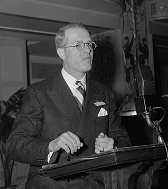
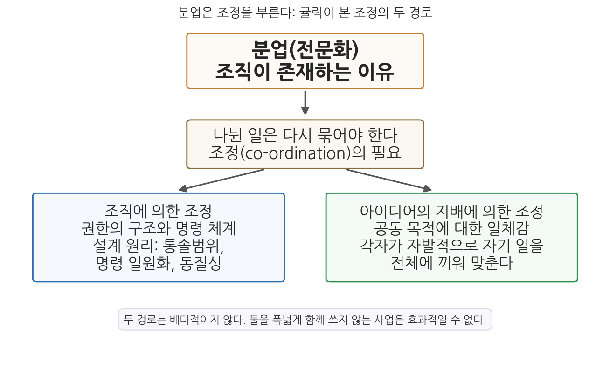
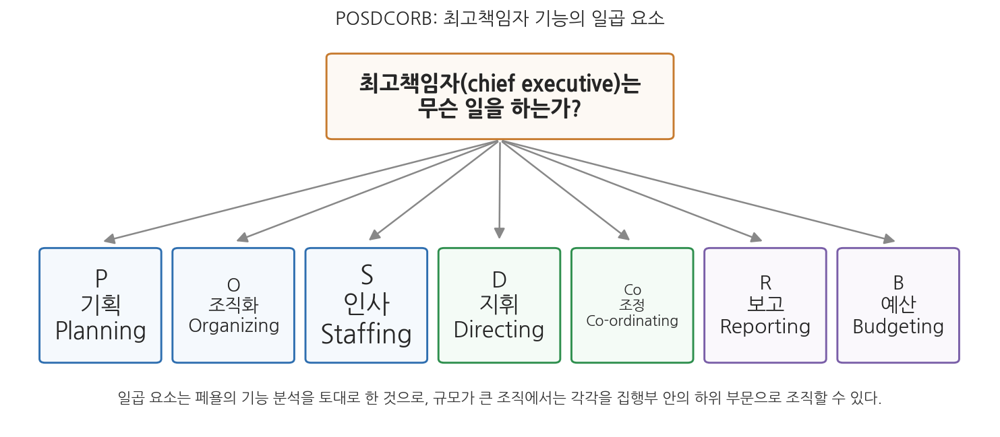

9주차 2차시. 행정국가의 제도화 (2): 귤릭의 조직이론: POSDCORB와 조정의 구조
최종 수정: 2026-08-13 · 이 교재는 학기 중에도 계속 업데이트됩니다
분업은 조직의 토대이며, 실은 조직이 존재하는 이유 그 자체다. (루서 귤릭, 「조직이론에 관한 노트」)
이 장에서 배우는 것
집을 한 채 짓는다고 하자. 솜씨 좋은 목수 한 사람이 기초부터 도배까지 혼자 다 할 수도 있다. 느리고 서툰 부분이 있겠지만, 적어도 헷갈릴 일은 없다. 무엇을 먼저 하고 다음에 무엇을 할지 자기 머릿속에서 정하면 되기 때문이다. 이제 기초공, 목공, 배관공, 전기공, 도장공을 불러 일을 나누어 보자. 각자는 훨씬 능숙하다. 그런데 이상하게도 집이 되질 않는다. 배관공이 벽을 뚫으려는 자리에 전기공이 이미 전선을 깔아 놓았고, 자재는 필요한 날 오지 않으며, 문을 어디에 낼지를 두고 다툼이 벌어진다. 무엇이 빠졌는가. 일을 나누는 순간 반드시 함께 생겨나야 했던 것, 곧 조정이 빠졌다.
1937년, 루서 귤릭은 이 평범한 관찰을 정부 조직 이론의 출발점으로 삼았다. 1차시에서 해링이 "거대해진 행정국가에서 관료의 재량을 무엇이 인도하는가"를 물었다면, 귤릭은 같은 행정국가를 향해 다른 질문을 던진다. "이 거대한 기계를 어떻게 짜야 한 방향으로 움직이는가." 마침 그는 이 질문에 답할 공식적인 자리에 있었다. 루스벨트 대통령이 만든 브라운로 위원회의 세 위원 가운데 한 사람으로서, 연방정부 관리 체계의 재설계를 맡았던 것이다. 이 장에서 읽을 「조직이론에 관한 노트」는 그 작업의 이론적 뼈대이며, 행정학에서 가장 유명한 약어인 POSDCORB가 태어난 텍스트다.
이 장에서는 구체적으로 다음을 배운다.
- 귤릭과 브라운로 위원회(1937)가 놓인 시대적 자리
- 분업이 왜 조직의 존재 이유이며, 어디까지 밀어붙일 수 있는지
- 조정의 두 경로와 그것을 떠받치는 설계 원리들(통솔범위, 명령 일원화, 동질성)
- POSDCORB, 곧 최고책임자의 일곱 가지 기능
- 이 설계 원리들이 현대 정부조직에서 마주치는 딜레마
이 장은 하나의 질문을 따라 전개된다. "나뉜 일은 어떻게 다시 하나로 묶이는가?"
2.1 귤릭과 브라운로 위원회를 만난다 → 2.2 원전 강독 1: 분업의 논리와 한계를 읽는다 → 2.3 원전 강독 2: 조정의 두 경로와 세 가지 설계 원리를 읽는다 → 2.4 원전 강독 3: POSDCORB를 읽는다 → 2.5 개념을 정리한다 → 2.6 조직 설계 원리의 현대적 딜레마를 짚는다.
2.1 귤릭과 브라운로 위원회: "대통령에게는 도움이 필요하다"

인물 · 루서 귤릭(Luther H. Gulick, 1892-1993)미국의 행정학자·행정 실천가. 일본 오사카의 선교사 가정에서 태어났고, 뉴욕시 행정관을 지내며 이론과 실무를 오갔다.
대표 저술: 「조직이론에 관한 노트」(1937), 『행정과학 논집』(1937, 어위크와 공편)
사진: 해리스 앤드 유잉 촬영, 미국 의회도서관 (퍼블릭 도메인)
루서 귤릭(Luther H. Gulick, 1892-1993)은 미국의 행정학자이자 행정 실천가다. 컬럼비아대학의 도시행정 담당 이턴(Eaton) 석좌교수와 공공행정연구소(Institute of Public Administration) 소장을 지냈고, 뉴욕시 정부 자문과 연방 행정개혁에 두루 참여했다. 그는 책상 위의 이론가가 아니었다. 1934년 뉴욕시 헌장위원회에서 60개 가까운 부서를 어떻게 줄일지 씨름했고, 그 경험이 이 장에서 읽을 텍스트 곳곳에 배어 있다. 앙리 페욜(Henri Fayol)에서 무니와 어위크로 이어지는 유럽·미국의 관리 이론 전통을 정부 조직의 맥락으로 집대성한 인물이 귤릭이며, 그 역시 100세까지 살며 행정학의 한 세기를 지켜보았다.
귤릭의 이름을 역사에 새긴 계기는 브라운로 위원회다. 1936년 루스벨트 대통령은 뉴딜로 폭증한 연방 행정을 대통령이 실제로 관리할 수 있게 만들 방안을 찾기 위해 행정관리에 관한 대통령위원회(President's Committee on Administrative Management)를 만들었다. 위원장 루이스 브라운로의 이름을 따 브라운로 위원회라 불린 이 위원회의 위원은 단 세 사람, 브라운로와 정치학자 찰스 메리엄, 그리고 귤릭이었다. 1937년 1월 제출된 보고서의 진단은 한 문장으로 유명하다. "대통령에게는 도움이 필요하다(The President needs help)." 1차시에서 읽은 해링의 진단, 곧 관료제가 막대한 권한을 쌓았지만 방향과 조정이 결여되어 있고 그 조정의 과업이 대통령 한 사람의 능력을 넘어선다는 관찰과 정확히 같은 문제의식이다. 위원회는 대통령 직속 보좌진의 신설과 행정부 재조직을 권고했고, 우여곡절 끝에 1939년 재조직법과 대통령실(Executive Office of the President) 신설로 결실을 맺었다. 오늘날 각국 정부의 "대통령비서실", "총리실"이라는 제도의 원형이 여기서 만들어졌다.
「조직이론에 관한 노트(Notes on the Theory of Organization)」(1937)는 이 작업과 나란히 쓰였다. 귤릭이 어위크와 함께 엮은 논문집 『행정과학 논집(Papers on the Science of Administration)』(1937)의 첫머리에 실린 이 글은, 브라운로 보고서가 처방이라면 그 처방의 이론적 근거에 해당한다. 이제 원전을 읽자.
2.2 원전 강독 1: 분업, 조직의 존재 이유
조직 이론은 조정의 구조에 관한 것이다
"대규모이거나 복잡한 사업은 어느 것이든 이를 추진할 많은 사람을 필요로 한다. 많은 사람이 함께 일할 때에는 그들 사이에 분업이 이루어질수록 최선의 성과가 나온다. 따라서 조직 이론은 한 사업의 분업 단위들 위에 얹히는 조정(co-ordination)의 구조에 관한 것이다. 그러므로 어떤 활동을 어떻게 조직할지 정하려면, 그 활동의 일을 어떻게 나눌지도 함께 생각해야 한다. 분업은 조직의 토대이며, 실은 조직이 존재하는 이유 그 자체다."
무슨 말인가. 이 짧은 첫 문단에 글 전체의 설계도가 들어 있다. 조직은 분업과 조정이라는 두 기둥으로 서 있다. 일을 나누지 않는다면 애초에 조직이 필요 없다. 혼자 다 하면 되기 때문이다. 그러나 일을 나누는 순간, 나뉜 조각들을 다시 하나의 목적으로 묶는 장치가 반드시 필요해진다. 그 장치의 설계가 조직 이론이다. 귤릭이 "조직을 어떻게 짤지 정하려면 일을 어떻게 나눌지도 함께 생각해야 한다"고 말하는 이유가 여기 있다. 분업의 방식이 조정의 부담을 결정하기 때문이다.
왜 중요한가. 이 정의는 조직도를 보는 눈을 바꾼다. 조직도의 칸들(분업)만 보지 말고, 칸들을 잇는 선(조정)을 보라는 것이다. 6주차에서 읽은 테일러가 작업장 안의 개별 작업을 과학화했다면, 귤릭은 그렇게 전문화된 작업들을 조직 전체로 묶는 상위의 문제를 다룬다. 과학적 관리론의 시선이 현장에서 정부 전체로 확장된 것이다.
왜 분업을 하는가, 그리고 어디서 멈추는가
"왜 분업을 하는가? 사람들은 성정과 능력과 기술에서 서로 다르고, 전문화할수록 숙련이 크게 늘기 때문이다. 한 사람이 동시에 두 곳에 있을 수 없기 때문이다. 지식과 기술의 범위가 너무 넓어서, 한 사람이 일생 동안 그 가운데 극히 일부밖에 알 수 없기 때문이다. 달리 말하면 이것은 인간의 본성과 시간과 공간의 문제다. (…) 분업은 무한정 밀어붙일 수 없다. 세분이 물리적 분할을 넘어 유기적 분할을 건드려서는 안 된다. 시험은 실용적이어야 한다. 나누어 보았을 때 정말 작동하는가? 뭔가 핵심이 파괴되어 없어지는가? 피를 보게 되는가?"
무슨 말인가. 분업의 근거는 거창한 원리가 아니라 인간의 세 가지 유한성이다. 사람마다 잘하는 것이 다르고(본성), 한 번에 한 가지 일밖에 할 수 없으며(시간), 한 곳에밖에 있을 수 없다(공간). 귤릭은 구두 공장의 예를 든다. 1,000명이 각자 구두 한 켤레를 처음부터 끝까지 만들면 하루 500켤레가 나오지만, 가죽 자르기, 구멍 찍기, 박기, 밑창 붙이기로 일을 나누면 기계를 들이지 않고도 생산량이 두 배로 는다. 도구를 바꾸고 자리를 옮기는 전환 시간이 사라지고, 각자의 소질에 맞는 전문화가 일어나기 때문이다. 그러나 분업에는 한계가 있다. 쪼갠 일감이 한 사람의 근무 시간을 채우지 못할 만큼 잘게 나누면 얻을 것이 없고(사람-시간의 한계), 그 시대의 기술과 관행이 허용하지 않는 분할은 실행되지 않으며(기술·관행의 한계), 무엇보다 유기적으로 얽혀 있는 활동을 잘라서는 안 된다. 귤릭의 짓궂은 예를 빌리면, 소의 앞쪽 절반은 목장에서 풀을 뜯게 하고 뒤쪽 절반은 헛간에서 젖을 짜게 할 수는 없다.
왜 중요한가. "피를 보게 되는가?"라는 마지막 물음은 이 글에서 가장 생생한 문장이다. 어떤 분할이 유기체를 해치는 분할인지 미리 알려 주는 이론 공식은 없으니, 나눠 보고 피가 나면 잘못 나눈 것이라는 실용적 시험을 하라는 것이다. 귤릭 스스로 이 기준에 순환논리의 요소가 있다는 비판을 인정한다. 자신의 원리가 어디까지나 경험 규칙임을 아는 이 정직함은, 10주차에서 만날 사이먼의 비판을 이해할 때 다시 중요해진다. 현대 조직에서도 이 물음은 살아 있다. 하나의 민원 처리를 접수, 심사, 결재, 통지로 잘게 나눈 뒤 서로 다른 팀에 맡겼더니 아무도 전체를 책임지지 않게 되었다면, 그 조직은 유기적 활동을 자르다 피를 본 것이다.
2.3 원전 강독 2: 조정의 두 경로와 설계 원리들
조정은 저절로 생기지 않는다
"한 사람이 혼자 집을 지을 때는 일하면서 계획한다. 무엇을 먼저 하고 다음에 무엇을 할지 스스로 정한다. 곧 조정을 본인이 해 버리는 것이다. 많은 사람이 함께 집을 지을 때는 이 부분, 곧 조정이 빠져서는 안 된다. 분업이 잘게 쪼개질수록 혼선의 위험이 커지고, 그만큼 상부의 감독과 조정이 더 절실해진다. 조정은 저절로 생기지 않는다. 지적이고 힘 있는, 꾸준하고 조직된 노력이 있어야 얻을 수 있다. 조정에는 단 하나의 길만 있는 것도 아니다. 경험은 두 가지 기본 경로를 보여 준다. 하나는 조직에 의한 조정이다. 분업 단위들을 권한의 구조 속에 배치하여, 위에서 아래까지 명령으로 업무를 맞물리게 하는 것이다. 다른 하나는 아이디어의 지배에 의한 조정이다. 공동의 목적에 대한 지적·의지적 일체감을 구성원의 마음속에 길러, 각자가 자발적으로 자신의 일을 전체에 능숙하고 열정적으로 끼워 맞추게 하는 것이다. 이 둘은 배타적이지 않다. 실제로 이 둘을 폭넓게 함께 쓰지 않는 사업은 효과적일 수 없다."
무슨 말인가. 도입의 집 짓기 이야기가 여기서 나온다. 혼자 일할 때 머릿속에서 공짜로 이루어지던 조정은, 여럿이 일하는 순간 따로 생산해야 하는 값비싼 재화가 된다. 그리고 그것을 생산하는 길이 둘 있다. 첫째 길은 구조다. 권한의 위계를 세우고 명령이 위에서 아래로 흐르게 하는 것이다. 둘째 길은 신념이다. "우리가 왜 이 일을 하는가"에 대한 공동의 이해가 구성원들의 마음에 살아 있으면, 명령이 없어도 각자가 알아서 전체에 맞춰 움직인다. 귤릭은 어느 한쪽만으로 굴러가는 조직은 없다고 못 박는다.

그림 9-3이 이 논리의 흐름을 보여 준다. 위에서 아래로 읽는다. 분업이 조직의 존재 이유이지만, 나뉜 일은 반드시 다시 묶여야 하고, 묶는 길은 권한 구조(왼쪽, 파랑)와 공동 목적에 대한 일체감(오른쪽, 초록)의 두 갈래다. 여기서 알 수 있는 것은 귤릭이 흔한 오해처럼 위계만 말한 이론가가 아니라는 점이다. 그가 이 글에서 상세히 발전시킨 것은 왼쪽 경로의 설계 원리들이지만, 오른쪽 경로 없이 왼쪽만으로는 조직이 효과적일 수 없다고 처음부터 분명히 했다.
왜 중요한가. 이 구분은 오늘날의 언어로 옮기면 공식 구조에 의한 조정과 조직문화·비전에 의한 조정이다. 규칙과 결재선만 촘촘한 조직은 구성원이 시키는 것만 하게 만들고, 반대로 비전과 열정만 있고 구조가 없는 조직은 선의의 혼란에 빠진다. 80여 년 전의 이 통찰은 "구조냐 문화냐"라는 요즘의 논쟁이 잘못된 양자택일임을 미리 일러 준다.
통솔의 범위: 피아노 건반의 한계
이제 귤릭은 첫째 길, 곧 권한 구조를 세울 때 부딪히는 인간적 한계들을 하나씩 짚는다. 첫 번째가 통솔범위다.
"이 작업의 첫머리에서 우리는 냉엄한 인간적 한계를 마주한다. 인간의 손이 피아노에서 짚을 수 있는 건반의 수가 제한되어 있듯, 인간의 정신과 의지가 즉각 관리할 수 있는 접촉점의 수도 제한되어 있다. 통솔범위의 한계는 부분적으로는 지식의 한계이지만, 더 근본적으로는 시간과 에너지의 한계다. 그 결과 어떤 사업에서든 최고책임자가 직접 지휘할 수 있는 사람의 수는 몇 되지 않는다."
무슨 말인가. 한 사람의 상관이 직접 감독할 수 있는 부하의 수, 곧 통솔범위(span of control)에는 한계가 있다. 아무리 유능한 관리자라도 하루는 24시간이고 주의력은 유한하기 때문이다. 그렇다면 그 수는 몇인가. 귤릭은 당대 권위자들의 답이 3명에서 12명까지 제각각임을 나열한 뒤, 흥미롭게도 정답 찾기를 거부한다. 업무가 반복적이고 균질하며 부하들이 한 방에 모여 있으면 수십 명도 감독할 수 있지만, 업무가 다양하고 질적이며 인력이 여러 도시에 흩어져 있으면 몇 명이 한계다. 기능의 다양성, 시간(조직의 안정성), 공간(분산)이라는 세 변수를 무시한 채 "5명"이니 "8명"이니 하는 숫자를 박아 두면 과학적 타당성이 약해진다는 것이 그의 결론이다.
왜 중요한가. 통솔범위의 한계는 위계가 생기는 이유 그 자체다. 한 사람이 모두를 지휘할 수 없으니, 지휘를 위임받은 중간 관리자가 필요하고, 그래서 조직은 층을 쌓는다. 동시에 이 원리는 딜레마를 품고 있다. 통솔범위를 좁히면 감독은 꼼꼼해지지만 계층이 늘어나 결재가 느려지고, 넓히면 조직은 납작해지지만 감독이 성글어진다. 이 딜레마는 2.6절에서 다시 만난다.
명령 일원화: 두 주인을 섬길 수 없다
"'한 사람은 두 주인을 섬길 수 없다'는 말이 신학의 논변으로 제시될 수 있었던 것도, 일상에서 이미 원리로 받아들여지고 있었기 때문이다. 행정에서는 이를 명령 일원화(unity of command)라 부른다. 여러 상관의 지시를 받는 작업자는 혼란스럽고, 비능률적이며, 책임감이 흐려진다. 한 상관의 지시만 받는 작업자는 조리 있고, 능률적이며, 책임감 있게 일한다. 명령 일원화는 명령을 내리는 쪽이 아니라 받는 쪽에 관한 원리다."
무슨 말인가. 한 사람의 부하는 한 사람의 상관에게서만 명령을 받아야 한다는 원리다. 눈여겨볼 것은 마지막 문장이다. 이 원리의 근거는 명령하는 쪽의 권위가 아니라 명령받는 쪽의 처지다. 두 상관이 상충하는 지시를 내리면 부하는 어느 쪽을 따라야 할지 알 수 없고, 일이 잘못되어도 "저쪽 지시를 따랐을 뿐"이라며 책임이 증발한다. 귤릭은 존경하는 테일러조차 이 원리를 어겼다고 지적한다. 테일러의 기능별 직장제는 속도, 기계, 자재마다 별도의 감독자를 두어 한 작업자가 여러 명의 지시를 받게 했는데, 귤릭이 보기에 이것은 오류였다. 원칙을 고지식하게 지키면 우스꽝스러운 장면이 생길 수 있지만, 원칙을 어기면 혼선과 비능률과 무책임이 거의 확실하다는 것이 그의 저울질이다.
왜 중요한가. 명령 일원화는 책임 추적의 원리이기도 하다. 명령의 선이 하나로 이어져 있어야 성과와 실패의 책임을 물을 선도 하나로 이어진다. 다만 현대 조직은 이 원리를 자주 의도적으로 어긴다. 소속 부서의 장과 프로젝트 책임자에게 동시에 보고하는 매트릭스 조직이 대표적이다. 전문성과 기동성을 얻는 대신 귤릭이 경고한 혼선의 비용을 치르는 이 교환에 대해서도 2.6절에서 다시 논의한다.
동질성의 원리와 전문가 경계론
귤릭이 드는 또 하나의 설계 원리는 동질성(homogeneity)이다. 함께 일하는 집단의 효율은 그들이 수행하는 업무, 사용하는 기술, 추구하는 목적의 동질성에 비례하며, "조직은 위아래로 하나의 흐름이어야 한다"는 것이다. 여기서 두 개의 실천적 규칙이 나온다. 첫째, 서로 이질적인 기능을 한 단위로 묶지 말라. 귤릭의 예를 빌리면, 농민과의 신뢰가 생명인 농업 지도 업무와 농민의 반감을 사는 해충·전염병 단속 업무를 같은 손에 맡기면 양쪽 다 망가지고, 소비자를 보호하는 의약품 규제를 생산자의 이해가 지배하는 부서에 두어서는 안 된다. 둘째, 전문성에 기초한 단위를 비전문가가 기술적으로 지휘하게 하지 말라. 그는 자격 없는 정치인이 고도로 전문화된 부서를 기술적으로 지휘하는 미국의 관행을 두고, 굿나우가 한 세대 전에 지적한 정치와 행정이라는 이질 기능의 혼합이 비능률을 낳는 사례라고 말한다. 5주차에서 읽은 이원론이 여기서는 조직 설계의 원리로 다시 등장하는 셈이다.
그런데 귤릭은 곧바로 방향을 바꾸어, 전문가 자신에게도 경고를 보낸다. 이 대목은 라틴어 소제목 "Caveamus Expertum(전문가를 경계하라)"으로 유명하다. 고도로 훈련된 전문가는 시민 자신보다 시민에게 무엇이 좋은지 자기가 더 잘 안다고 믿기 쉽고, 자기 분야의 예산 증액은 "공익"이고 남의 부서 증액은 "새는 돈"이라 여기며, 한 분야에서 거둔 성공을 근거로 아무 소양이 없는 다른 영역까지 권위를 들고 넘어가는 성향이 있다는 것이다. 그래서 귤릭은 이렇게 정리한다. "전문가의 제자리는 말하자면 수중(on tap)이지 정상(on top)이 아니다." 전문가는 수도꼭지처럼 필요할 때 지식을 내어 주는 자리에 있어야지, 최종 결정의 자리에 앉아서는 안 된다. 민주주의란 평범한 시민이 무엇이 자신에게 좋은지의 최종 심판자라는 통치 방식이기 때문이다.
귤릭은 능률을 행정의 기본 가치로 삼은 이론가다. 그런 그가 전문가 지배를 경계하며 "민주주의의 정당성"을 말하는 것은 모순처럼 보일 수 있다. 그러나 귤릭에게 능률은 그 자체가 목적이 아니라 시민에게 좋은 것 가운데 하나이며, 무엇이 좋은지의 최종 판단은 시민의 몫이다. 기술적 지휘권은 전문가에게, 목적의 결정권은 시민과 그 대표에게. 이 분업이 무너져 전문가가 목적까지 결정하면, 역사가 보여 주듯 전문가 집단은 인류에 봉사하기보다 통치하려 든다는 것이 그의 경고다. 1차시에서 해링이 공익 판단의 주관성을 직시했다면, 귤릭은 그 판단이 전문가의 전유물이 되어서는 안 된다는 울타리를 친 것이다.
2.4 원전 강독 3: POSDCORB, 최고책임자는 무슨 일을 하는가
분업과 조정의 원리를 갖추었다 해도 물음이 하나 남는다. 이 모든 구조의 꼭대기에 있는 사람, 곧 최고책임자는 정확히 무슨 일을 하는 사람인가. 귤릭은 뉴욕시 재편 작업에서 시장의 감독 부담을 덜기 위해 부시장 서너 명을 두는 방안을 설계하면서, 최고책임자의 일 자체를 분석할 필요를 느꼈다. 비서가 최고책임자의 편지 쓰기를 나누어 맡듯, 최고책임자의 다른 업무도 나누어 조직할 수 있으려면 먼저 그 업무의 전체 목록이 있어야 하기 때문이다.
"'최고책임자는 무슨 일을 하는가?' POSDCORB가 그 답이다. POSDCORB는 본디 지어낸 말로, '행정'이나 '관리' 같은 말이 구체성을 잃어버렸기에 최고책임자의 기능 요소들을 하나하나 불러 세우려고 만든 것이다. (…) 이 일곱 요소를 최고책임자의 주요 임무로 인정한다면, 그것들을 집행부 내부의 하위 부문으로 따로 조직할 수 있다는 결론이 따른다. 그런 세분이 필요한지는 전적으로 사업의 규모와 복잡성에 달려 있다."
무슨 말인가. POSDCORB는 최고책임자가 하는 일의 머리글자를 모은 조어다. 일곱 요소는 표 9-1과 같다.
표 9-1. POSDCORB: 최고책임자 기능의 일곱 요소
| 머리글자 | 기능 | 내용 |
|---|---|---|
| P | 기획(Planning) | 사업의 목적을 이루기 위해 해야 할 일과 그 방법을 큰 윤곽으로 설계한다 |
| O | 조직화(Organizing) | 권한의 공식 구조를 세워 분업 단위를 배열하고 정의하고 조정한다 |
| S | 인사(Staffing) | 인력을 뽑고 훈련하며 좋은 근무조건을 유지한다 |
| D | 지휘(Directing) | 결정을 내리고 명령과 지시로 구현하며 조직의 지도자가 된다 |
| Co | 조정(Co-ordinating) | 일의 여러 부분을 서로 연결한다 |
| R | 보고(Reporting) | 책임지는 대상에게 상황을 알리고, 기록·연구·감사로 자신과 부하가 파악하게 한다 |
| B | 예산(Budgeting) | 재정 계획, 회계, 통제 등 예산에 관한 모든 일을 맡는다 |

그림 9-4를 읽는 법은 간단하다. 위의 물음("최고책임자는 무슨 일을 하는가")에서 일곱 개의 화살표가 일곱 기능으로 뻗어 나간다. 여기서 알 수 있는 핵심은 화살표의 방향이 아니라 그 함의다. 최고책임자의 일이 이렇게 일곱 요소로 분해될 수 있다면, 각 요소를 전담하는 참모 조직을 집행부 안에 둘 수 있다. 기획을 전담하는 기획실, 인사를 전담하는 인사처, 예산을 전담하는 예산실이 바로 그것이다. POSDCORB는 최고책임자의 할 일 목록인 동시에, 대통령실과 총리실과 기획조정실이라는 현대 정부 참모 조직의 설계 명세서였던 셈이다.
왜 중요한가. 귤릭은 이 분석이 페욜의 기능 분석(기획, 조직, 지휘, 조정, 통제)을 토대로 했다고 밝힌다. 유럽 광산 회사의 관리 이론이 미국 연방정부의 재설계 언어로 번역된 것이다. 그리고 이 언어는 실제 제도가 되었다. 브라운로 보고서의 권고에 따라 1939년 만들어진 대통령실은, 대통령의 POSDCORB를 나누어 맡는 참모 기구다. 한 학자의 개념이 이토록 빠르게 국가 기구의 골격으로 옮겨진 사례는 행정학사에서 드물다. 행정국가의 "제도화"라는 이번 주의 제목이 가리키는 것이 바로 이 장면이다. 해링이 행정국가의 문제(재량, 조정 결여)를 개념화했다면, 귤릭은 그 문제에 대한 제도적 응답(참모 조직, 재조직)을 설계했다.
2.5 개념 정리: 원리들의 목록
이 장에서 읽은 귤릭의 설계 원리를 한자리에 모으면 다음과 같다.
분업(division of work): 인간의 본성·시간·공간의 한계 때문에 일을 나누어 전문화하는 것. 조직의 존재 이유이지만, 사람-시간의 한계, 기술·관행의 한계, 유기적 분할 금지라는 세 한계를 가진다.
조정(co-ordination): 나뉜 일을 하나의 목적으로 다시 묶는 일. 권한 구조에 의한 조정과 아이디어의 지배에 의한 조정의 두 경로가 있으며, 둘은 함께 쓰여야 한다.
통솔범위(span of control): 한 상관이 직접 감독할 수 있는 부하 수의 한계. 업무의 다양성, 조직의 안정성, 공간적 분산에 따라 달라진다.
명령 일원화(unity of command): 한 부하는 한 상관에게서만 명령을 받아야 한다는 원리. 명령을 받는 쪽의 혼란과 책임 흐림을 막기 위한 것이다.
동질성의 원리(principle of homogeneity): 업무·기술·목적이 동질적인 것끼리 묶어야 하며, 전문 단위에 비전문가가 기술적 지휘권을 행사해서는 안 된다는 원리.
POSDCORB: 최고책임자의 일곱 기능(기획·조직화·인사·지휘·조정·보고·예산)의 머리글자 조어.
귤릭 자신은 신중했다. 통솔범위의 정확한 숫자에 대해 "아직 충분한 과학적 연구가 축적되지 않았다"고 썼고, 유기적 분할의 판별 기준이 순환논리라는 비판에 "일리가 있다"고 인정했다. 그러나 이 원리들이 교과서와 개혁 보고서에 실려 퍼지면서, 조건과 유보는 떨어져 나가고 원리만 법칙처럼 남았다. 10주차 2차시에서 읽을 허버트 사이먼은 바로 이 지점을 공격한다. 통솔범위를 좁히라는 원리와 계층 수를 줄이라는 원리는 서로 충돌하는데, 어느 쪽을 언제 따를지 알려 주지 않는 원리는 과학의 법칙이 아니라 속담집의 격언에 불과하다는 것이다. 귤릭을 읽을 때는 원리의 내용과 함께, 그가 붙여 둔 단서들까지 읽어야 한다.
2.6 현대 행정에의 함의: 정부조직 설계의 원리와 딜레마
귤릭의 원리들은 오늘날에도 정부조직을 설계하고 비판하는 기본 어휘로 살아 있다. 그러나 살아 있는 만큼, 원리들끼리 부딪히는 딜레마도 함께 살아 있다.
첫째, 동질성의 원리는 부처 개편 논쟁의 문법이 되었다. 한국에서 정부가 바뀔 때마다 반복되는 부처 통폐합 논쟁을 떠올려 보자. 진흥 기능과 규제 기능을 한 부처에 둘 것인가라는 물음은, 농업 지도와 해충 단속을 한 손에 맡기지 말라던 귤릭의 예시와 같은 구조다. 2020년 감염병 위기 속에서 질병관리본부를 보건복지부의 소속 기관에서 독립된 질병관리청으로 승격한 것은, 전문성에 기초한 단위에 자율권을 주어야 한다는 동질성 원리의 현대적 적용으로 읽을 수 있다. 반대로 기능을 크게 묶은 2008년의 기획재정부(기획예산처와 재정경제부의 통합)는 조정의 이익을 위해 통솔범위의 부담을 감수한 사례다. 어느 쪽이 옳은가에 정답은 없다. 귤릭이 말했듯 조직 설계는 상충하는 원리들 사이의 저울질이기 때문이다.
둘째, POSDCORB는 참모 조직의 설계도로 남아 있다. 한국의 대통령비서실과 국무조정실, 각 부처의 기획조정실은 최고책임자의 기획·조정·보고·예산 기능을 나누어 맡는 기구라는 점에서 브라운로 위원회가 설계한 대통령실의 후예다. 귤릭이 뉴욕시에 제안한 부시장 구상, 곧 "부서의 꼭대기가 아니라 시장실의 분신"으로서 시장과 부서 사이의 접점을 늘리는 참모는, 오늘날 정책실장이나 수석비서관 제도의 원형적 논리다. 동시에 그 구상의 위험도 물려받았다. 참모가 "정책 결정에 끼어들지 않으면서" 조정만 한다는 경계선은 현실에서 자주 흐려지고, 참모 조직이 비대해지면 계선 부처의 책임이 흐려진다. 명령 일원화의 렌즈로 보면, 장관이 대통령과 비서실 양쪽의 지시를 받는 상황은 귤릭이 경고한 두 주인 문제의 재연이다.
셋째, 원리들의 충돌은 사라지지 않았다. 통솔범위를 좁히면 계층이 늘어 결정이 느려지고, 계층을 줄이면 통솔범위가 넓어져 감독이 성글어진다. 명령 일원화를 지키면 부처 칸막이가 두꺼워지고, 칸막이를 허물려 범정부 태스크포스와 매트릭스형 조직을 만들면 명령 일원화가 깨진다. 재난 대응처럼 여러 부처의 소관이 겹치는 문제에서 이 긴장은 가장 날카롭다. 귤릭의 유산은 이 딜레마들의 정답이 아니라, 딜레마를 정확하게 말할 수 있게 해 주는 언어다. 그리고 그 언어의 한계를 따지는 일, 곧 "원리들이 충돌할 때 무엇이 판단을 인도하는가"라는 질문은 다음 주 사이먼의 몫으로 남는다. 눈치챘겠지만 이 질문은 1차시에서 해링이 재량에 대해 던진 질문과 같은 모양이다. 행정국가의 제도화는 원리로 시작해 판단의 문제로 끝난다.
요약
귤릭은 뉴욕시 개혁과 브라운로 위원회(1937)라는 실천의 한복판에서 「조직이론에 관한 노트」를 썼다. "대통령에게는 도움이 필요하다"는 위원회의 진단은 해링이 지적한 조정 결여 문제에 대한 제도적 응답이었다(2.1). 귤릭에게 조직 이론은 분업 단위들 위에 얹히는 조정의 구조에 관한 것이다. 분업은 인간의 본성·시간·공간의 한계에서 비롯하는 조직의 존재 이유이지만, 사람-시간, 기술·관행, 유기적 분할이라는 세 한계 안에서만 유효하다(2.2). 조정은 저절로 생기지 않으며, 권한 구조에 의한 조정과 아이디어의 지배에 의한 조정이 함께 쓰여야 한다. 권한 구조의 설계는 통솔범위의 한계, 명령 일원화, 동질성의 원리를 따르되, 전문가는 "수중(on tap)"에 두어야지 "정상(on top)"에 두어서는 안 된다(2.3). 최고책임자의 일은 기획·조직화·인사·지휘·조정·보고·예산의 일곱 요소, 곧 POSDCORB로 분해되며, 큰 조직에서는 각 요소를 전담하는 참모 기구를 둘 수 있다. 이 구상은 1939년 대통령실 신설로 제도화되었다(2.4). 이 원리들은 오늘날 부처 개편, 참모 조직, 조직 계층 설계의 기본 어휘로 살아 있지만, 원리들끼리의 충돌이라는 딜레마도 함께 남았고, 그 딜레마는 사이먼의 비판(10주차)으로 이어진다(2.5, 2.6).
토론·복습 문제
9-5. (원전 구절 해석) 귤릭은 "명령 일원화는 명령을 내리는 쪽이 아니라 받는 쪽에 관한 원리다"라고 썼다. 이 문장이 명령 일원화의 정당화 논리를 어떻게 바꾸어 놓는지 설명해 보라. (힌트: 상관의 권위를 위한 원리와 부하의 일하는 조건을 위한 원리는 무엇이 다른가) 그리고 소속 부서장과 프로젝트 책임자에게 동시에 보고하는 매트릭스 조직은 이 원리를 어떤 이익과 맞바꾸는지 논해 보라.
9-6. (기말 대비 서술형) 귤릭의 조직이론에서 분업과 조정의 관계를 설명하고, 조정의 두 경로(조직에 의한 조정, 아이디어의 지배에 의한 조정)가 현대 정부조직에서 각각 어떤 제도로 나타나는지 예를 들어 논의하시오. 아울러 "이 둘은 배타적이지 않다"는 귤릭의 명제가 조직 설계에 주는 함의를 서술하시오.
9-7. (원리의 적용과 충돌) 어느 시 정부가 "결재 단계가 너무 많아 일이 느리다"는 진단에 따라 중간 계층을 두 개 없앴다고 하자. 통솔범위의 원리에 비추어 이 개편이 가져올 부작용을 예측하고, 귤릭의 세 변수(기능의 다양성, 시간, 공간)를 사용해 어떤 부서에서 부작용이 크고 어떤 부서에서 작을지 분석해 보라.
9-8. (텍스트 연결) 1차시의 해링은 공익 판단이 결국 각 공무원의 주관적 해석에 달려 있다고 보았고, 2차시의 귤릭은 "전문가의 제자리는 수중이지 정상이 아니다"라며 전문가의 최종 결정권을 부정했다. 두 주장을 연결하면 행정국가에서 "누가, 무엇을 근거로 최종 판단을 내려야 하는가"에 대해 어떤 그림이 그려지는가. 두 텍스트의 근거를 인용하며 자신의 답을 구성해 보라.